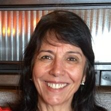
Coordenadora
Rosana Sueli da Motta Jafelice
- Doutorado
- Engenharia Elétrica, Unicamp
- Unidade
- IME/UFU
- Áreas
- Modelagem matemática, conjuntos fuzzy, redes neuro-fuzzy, epidemiologia e autômatos celulares
O REME reúne docentes de matemática, estatística, computação e engenharia da Universidade Federal de Uberlândia e estudantes de graduação e de pós-graduação.

Coordenadora
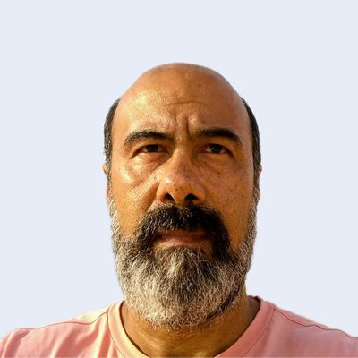
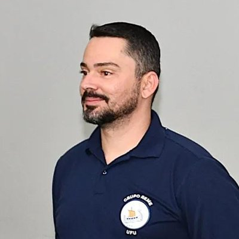
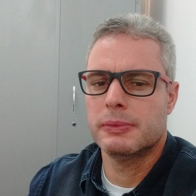
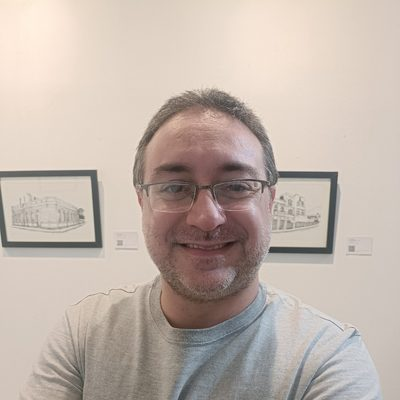
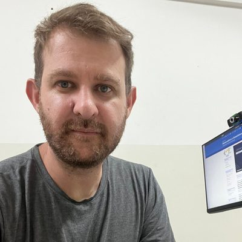
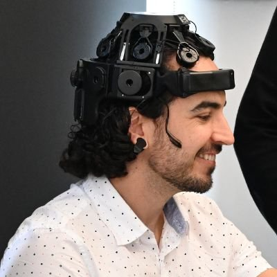
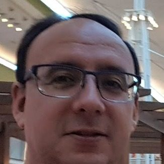
Estudantes de graduação e de pós-graduação que trabalham nos projetos e nas oficinas.
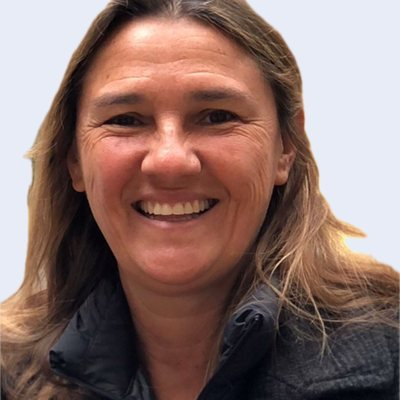
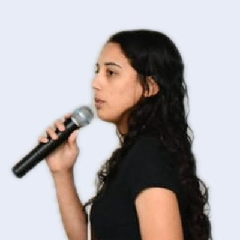
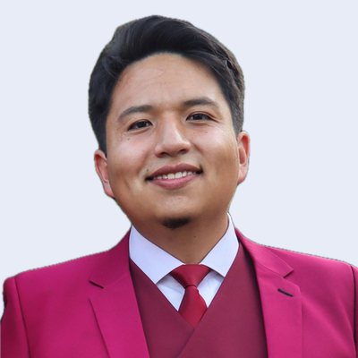
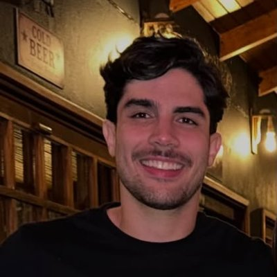
Docentes e estudantes da UFU interessados em trabalhar com problemas de empresas podem escrever para a coordenação.